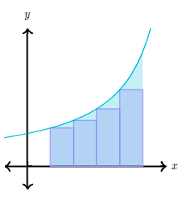
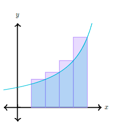
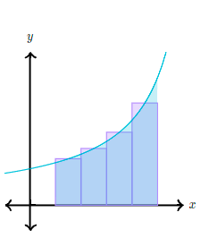
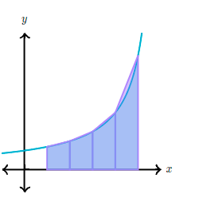

¿Qué son las sumas de Riemann?
Una suma de Riemann es una aproximación del área bajo la curva, al dividirla en varias formas simples (tales como rectángulos o trapecios).
En una suma de Riemann izquierda aproximamos el área con rectángulos (normalmente de ancho igual), donde la altura de cada rectángulo es igual al valor de la función en el extremo izquierdo de su base.
En una suma de Riemann derecha la altura de cada rectángulo es igual al valor de la función en el extremo derecho de su base.
En una suma de Riemann de punto medio la altura de cada rectángulo es igual al valor de la función en el punto medio de su base.
Podemos también usar trapecios para aproximar el área (esto se llama regla del trapecio). En este caso, cada trapecio toca la curva en sus dos vértices superiores.
Para cada tipo de aproximación, mientras más formas usemos más cercana será la aproximación al área real. Las referencias difieren en este punto, pero nosotros llamamos suma de Riemann a cualquier aproximación que use rectángulos y suma trapezoidal a cualquier aproximación que use trapecios.
Si quieres consultar más, revisa este video Sumas Riemann
Referencia: Sumas Riemann Khan Academy